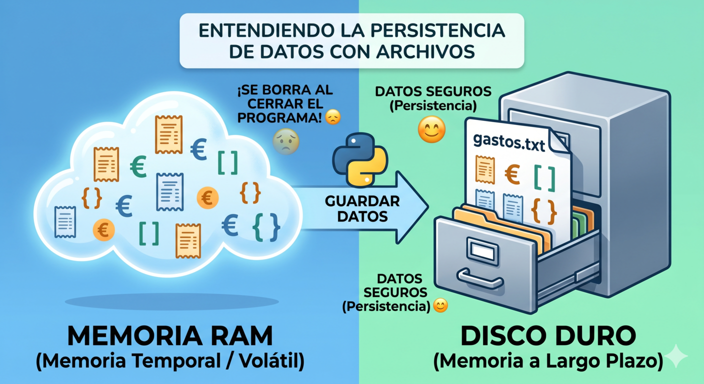

1. Los archivos
Imagina que pasas horas introduciendo todos los tickets del mes en tu Gestor de Gastos. Estás orgulloso de tu trabajo, pero al cerrar VSCode... ¡puf! Todo desaparece. Esto ocurre porque las variables (como tus listas y diccionarios) viven en la memoria RAM del ordenador, que se borra al apagar el programa.
Cuando un programa termina de ejecutarse, todo lo que había en sus variables desaparece de la memoria del ordenador. Es como si cada vez que cerraras una libreta, todas las anotaciones se borraran solas. Evidentemente, un gestor de gastos que no recuerda nada no sirve de mucho.
Para que tu aplicación tenga "memoria a largo plazo", necesitamos que escriba esos datos en un archivo físico (como un .txt o un .csv) guardado en tu disco duro. En Python, hacer esto es increíblemente fácil.

2. Leer y escribir archivos
Trabajar con archivos en programación es exactamente igual que trabajar con una libreta de papel en la vida real. Tienes que seguir tres pasos:
- Abrir la libreta.
- Leer lo que pone o escribir algo nuevo.
- Cerrar la libreta y guardarla en el cajón.
En Python trabajar con archivos es muy sencillo. Todo gira en torno a la función open(), que abre un archivo y te devuelve un objeto con el que puedes leer o escribir. Cuando terminas, debes cerrarlo para liberar recursos.
La función open() y los modos de apertura
archivo = open("gastos.txt", "r") # Abre para leer
archivo = open("gastos.txt", "w") # Abre para escribir (borra el contenido anterior)
archivo = open("gastos.txt", "a") # Abre para añadir al final
archivo = open("gastos.txt", "x") # Crea un archivo nuevo (error si ya existe)
¿Y si hacemos magia?
La magia de la palabra with
El error más común de los programadores principiantes es olvidar "cerrar la libreta" (usar .close()), lo que puede corromper el archivo. Para evitarlo, Python inventó una estructura maravillosa usando la palabra with (con).
Al usar with, Python se encarga de abrir el archivo, dejarte escribir, y cerrarlo automáticamente en cuanto terminas.
# ❌ Sin with: hay que cerrar manualmente
archivo = open("gastos.txt", "w")
archivo.write("45.50,comida,01/11/2024\n")
archivo.close() # Si olvidamos esto, el archivo puede corromperse
# ✅ Con with: se cierra automáticamente
with open("gastos.txt", "w", encoding="utf-8") as archivo:
archivo.write("45.50,comida,01/11/2024\n")
archivo.write("32.00,transporte,03/11/2024\n")Usa siempre with para abrir archivos. Es más seguro, más limpio y es la práctica estándar en Python.
Leer
# Leer todo el contenido de una vez
with open("gastos.txt", "r", encoding="utf-8") as archivo:
contenido = archivo.read()
print(contenido)
# Leer línea a línea (útil para archivos grandes)
with open("gastos.txt", "r", encoding="utf-8") as archivo:
for linea in archivo:
print(linea.strip()) # strip() elimina el salto de línea
# Leer todas las líneas en una lista
with open("gastos.txt", "r", encoding="utf-8") as archivo:
lineas = archivo.readlines()
print(f"El archivo tiene {len(lineas)} gastos registrados")Escribir
gastos = [
"45.50,comida,01/11/2024",
"32.00,transporte,03/11/2024",
"18.75,ocio,05/11/2024"
]
# Escribir varias líneas de golpe
with open("gastos.txt", "w", encoding="utf-8") as archivo:
archivo.writelines(f"{gasto}\n" for gasto in gastos)
# Añadir un gasto sin borrar los anteriores
with open("gastos.txt", "a", encoding="utf-8") as archivo:
archivo.write("120.00,casa,08/11/2024\n")
print(" Gasto añadido al historial")3. Relaciona
Relaciona el modo con su uso:
Relaciona el modo con su uso:
","showMinimize":false,"itinerary":{"showClue":false,"clueGame":"","percentageClue":40,"showCodeAccess":false,"codeAccess":"","messageCodeAccess":""},"cardsGame":[{"url":"","x":0,"y":0,"author":"","alt":"","audio":"","color":"#000000","backcolor":"#ffffff","eText":"%22r%22","urlBk":"","xBk":0,"yBk":0,"authorBk":"","altBk":"","audioBk":"","colorBk":"#000000","backcolorBk":"#ffffff","eTextBk":"Abre%20para%20leer.%20Error%20si%20el%20archivo%20no%20existe"},{"url":"","x":0,"y":0,"author":"","alt":"","audio":"","color":"#000000","backcolor":"#ffffff","eText":"%22w%22","urlBk":"","xBk":0,"yBk":0,"authorBk":"","altBk":"","audioBk":"","colorBk":"#000000","backcolorBk":"#ffffff","eTextBk":"Abre%20para%20escribir.%20Borra%20el%20contenido%20anterior"},{"url":"","x":0,"y":0,"author":"","alt":"","audio":"","color":"#000000","backcolor":"#ffffff","eText":"%22a%22","urlBk":"","xBk":0,"yBk":0,"authorBk":"","altBk":"","audioBk":"","colorBk":"#000000","backcolorBk":"#ffffff","eTextBk":"Abre%20para%20a%C3%B1adir%20datos%20al%20final%20sin%20borrar%20nada"},{"url":"","x":0,"y":0,"author":"","alt":"","audio":"","color":"#000000","backcolor":"#ffffff","eText":"%22x%22","urlBk":"","xBk":0,"yBk":0,"authorBk":"","altBk":"","audioBk":"","colorBk":"#000000","backcolorBk":"#ffffff","eTextBk":"Crea%20un%20archivo%20nuevo.%20Error%20si%20ya%20existe"},{"url":"","x":0,"y":0,"author":"","alt":"","audio":"","color":"#000000","backcolor":"#ffffff","eText":"with%20open(...)%20as%20f%3A","urlBk":"","xBk":0,"yBk":0,"authorBk":"","altBk":"","audioBk":"","colorBk":"#000000","backcolorBk":"#ffffff","eTextBk":"Abre%20y%20cierra%20el%20archivo%20autom%C3%A1ticamente"}],"isScorm":0,"textButtonScorm":"Guardar la puntuación","repeatActivity":false,"textAfter":"","version":1.3,"percentajeCards":100,"type":1,"showSolution":true,"timeShowSolution":3,"time":3,"evaluation":false,"evaluationID":"","id":"2026531183716-120","msgs":{"msgSubmit":"Enviar","msgClue":"¡Genial! La pista es:","msgCodeAccess":"Código de acceso","msgPlayStart":"Pulse aquí para jugar","msgScore":"Puntuación","msgErrors":"Errores","msgHits":"Aciertos","msgMinimize":"Minimizar","msgMaximize":"Maximizar","msgFullScreen":"Pantalla Completa","msgExitFullScreen":"Salir del modo pantalla completa","msgNoImage":"Pregunta sin imágenes","msgEndGameScore":"Antes de guardar la puntuación comience la partida.","msgScoreScorm":"La puntuación no se puede guardar porque esta página no forma parte de un paquete SCORM.","msgOnlySaveScore":"¡Sólo puede guardar la puntuación una vez!","msgOnlySave":"Sólo puede guardar una vez","msgInformation":"Información","msgYouScore":"Su puntuación","msgAuthor":"Autoría","msgOnlySaveAuto":"Su puntuación se guardará después de cada pregunta. Sólo puede jugar una vez.","msgSaveAuto":"Su puntuación se guardará automáticamente después de cada pregunta.","msgSeveralScore":"Puede guardar la puntuación tantas veces como quiera","msgYouLastScore":"La última puntuación guardada es","msgActityComply":"Ya ha realizado esta actividad.","msgPlaySeveralTimes":"Puede realizar esta actividad cuantas veces quiera","msgClose":"Cerrar","msgAudio":"Audio","msgNumQuestions":"Número de tarjetas","msgTryAgain":"Necesita al menos un %s% de respuestas correctas para conseguir la información. Vuelva a intentarlo.","msgEndGameM":"Has completado el juego. Tu puntuación es %s.","msgUncompletedActivity":"Actividad no completada","msgSuccessfulActivity":"Actividad superada. Puntuación: %s","msgUnsuccessfulActivity":"Actividad no superada. Puntuación: %s","msgTypeGame":"Relaciona","msgCheck":"Comprobar","msgRestart":"Reiniciar"}}4. El Gestor con memoria
Ya sabes abrir, leer y escribir archivos. Ahora vamos a aplicarlo directamente al Gestor de Gastos para que recuerde los datos entre sesiones. Usaremos json para guardar los datos, os para comprobar si el archivo existe y try/except para gestionar los posibles errores.
os — El guardián de los archivos
Antes de intentar abrir un archivo, es fundamental comprobar que existe y que está en condiciones de ser leído. Para eso usamos la biblioteca os, incluida en Python sin necesidad de instalarla:
import osLas funciones de os más útiles para trabajar con archivos en el Gestor son:

Aplicadas al Gestor, así es como las usarías antes de intentar cargar los datos:
import os
ARCHIVO = "gestor.json"
# ¿Existe el archivo?
if not os.path.exists(ARCHIVO):
print(" No hay datos previos. Empezando desde cero.")
# ¿Está vacío?
elif os.path.getsize(ARCHIVO) == 0:
print(" El archivo existe pero está vacío.")
# Todo correcto, podemos cargarlo
else:
tamaño = os.path.getsize(ARCHIVO)
print(f" Archivo encontrado ({tamaño} bytes). Cargando datos...")Combinar os.path.exists() con os.path.getsize() antes de abrir un archivo es una buena práctica que evita errores inesperados, especialmente en la primera ejecución del programa o si el archivo se ha corrompido.
El manejo de excepciones: try / except
Cuando trabajas con archivos siempre pueden ocurrir errores imprevistos: el archivo no existe, está corrupto o no tienes permisos para abrirlo. Si no los gestionas, tu programa se cerrará con un error feo. La solución es el bloque try/except:
try:
with open("gestor.json", "r", encoding="utf-8") as f:
datos = json.load(f)
print("Datos cargados correctamente")
except FileNotFoundError:
print(" No hay datos previos. Empezando desde cero.")
datos = {"gastos": [], "totales": {}}
except json.JSONDecodeError:
print(" El archivo está dañado. Empezando desde cero.")
datos = {"gastos": [], "totales": {}}try contiene el código que puede fallar. except captura el error específico y lo gestiona sin que el programa se cierre. Puedes encadenar varios except para distintos tipos de error.
¿Cómo quedaría el gestor con memoria?
Con todo lo aprendido, el Gestor completo con memoria quedaría así:
import json
import os
# Nombre del archivo donde se guardarán los datos del gestor
ARCHIVO = "gestor.json"
def cargar_datos():
"""Carga los datos del archivo si existe y está en buen estado."""
# Comprobamos si el archivo existe antes de intentar abrirlo
if not os.path.exists(ARCHIVO):
print(" No hay datos previos. Empezando desde cero.")
return [], {} # Devolvemos estructuras vacías para empezar desde cero
if os.path.getsize(ARCHIVO) == 0: # Comprobamos que el archivo no esté vacío
print("El archivo está vacío. Empezando desde cero.")
return [], {}
try:
with open(ARCHIVO, "r", encoding="utf-8") as f: # Abrimos el archivo en modo lectura
datos = json.load(f) # Convertimos el contenido JSON a estructuras Python
print("Sesión anterior cargada correctamente.")
return datos["gastos"], datos["totales"] # Devolvemos la lista de gastos y el diccionario de totales
except json.JSONDecodeError:
print("El archivo está dañado. Empezando desde cero.") # El archivo existe pero su contenido no es JSON válido
return [], {}
except KeyError:
print("Formato incorrecto. Empezando desde cero.") # El archivo JSON no tiene la estructura esperada
return [], {}
def guardar_datos(gastos, totales):
"""Guarda los datos actuales en el archivo JSON."""
try:
# Creamos el diccionario con todos los datos a guardar
datos = {
"gastos": gastos, # Lista completa de gastos
"totales": totales # Diccionario de totales por categoría
}
# Abrimos el archivo en modo escritura (sobrescribe el contenido anterior)
with open(ARCHIVO, "w", encoding="utf-8") as f:
# Guardamos los datos en formato JSON legible (indent=2)
# ensure_ascii=False permite guardar tildes y ñ correctamente
json.dump(datos, f, ensure_ascii=False, indent=2)
print("Datos guardados correctamente.")
except IOError:
# Error de entrada/salida: permisos, disco lleno, etc.
print("Error al guardar. Comprueba los permisos del archivo.")
5. Revisa lo aprendido
Elija la respuesta correcta
6. Dale memoria a tu Gestor
Integra las funciones cargar_datos() y guardar_datos() en el Gestor de Gastos que construiste en el bloque anterior. El programa debe:
- Al arrancar: cargar los datos del archivo gestor.json si existe.
- Al registrar un gasto: guardar automáticamente los datos actualizados.
- Al salir: confirmar que los datos han quedado guardados.
Pista: Llama a cargar_datos() antes del bucle while y a guardar_datos() dentro de la opción 1 (registrar gasto) y también en la opción 5 (salir).
Revisa solución
import json
import os
CATEGORIAS = ("comida", "transporte", "ocio", "casa", "salud")
ARCHIVO = "gestor.json"
def cargar_datos():
if not os.path.exists(ARCHIVO):
print("ℹ️ No hay datos previos. Empezando desde cero.")
return [], {}
try:
with open(ARCHIVO, "r", encoding="utf-8") as f:
datos = json.load(f)
print(f"✅ Sesión cargada: {len(datos['gastos'])} gastos registrados.")
return datos["gastos"], datos["totales"]
except (json.JSONDecodeError, KeyError):
print("⚠️ Archivo dañado. Empezando desde cero.")
return [], {}
def guardar_datos(gastos, totales):
try:
with open(ARCHIVO, "w", encoding="utf-8") as f:
json.dump({"gastos": gastos, "totales": totales},
f, ensure_ascii=False, indent=2)
print("✅ Datos guardados correctamente.")
except IOError:
print("❌ Error al guardar.")
def mostrar_menu():
print("\n=== MENÚ DEL GESTOR ===")
print("1. Registrar gasto")
print("2. Ver todos los gastos")
print("3. Ver resumen por categoría")
print("4. Ver categorías usadas")
print("5. Salir")
def registrar_gasto(gastos, totales):
importe = float(input("Importe: "))
categoria = input("Categoría: ").lower().strip()
if categoria not in CATEGORIAS:
print(f"⚠️ Categoría no válida.")
return
import datetime
fecha = datetime.date.today().strftime("%d/%m/%Y")
gastos.append({"importe": importe,
"categoria": categoria, "fecha": fecha})
totales[categoria] = totales.get(categoria, 0) + importe
guardar_datos(gastos, totales)
print(f"✅ Gasto de {importe} € en {categoria} registrado.")
def mostrar_gastos(gastos):
if not gastos:
print("📋 No hay gastos registrados.")
return
print("📋 Listado de gastos:")
for g in gastos:
print(f" {g['fecha']} {g['categoria']:<14} {g['importe']:.2f} €")
def mostrar_resumen(totales):
if not totales:
print("📊 No hay datos todavía.")
return
print("📊 Resumen por categoría:")
for cat, total in totales.items():
print(f" {cat:<14} {total:.2f} €")
def mostrar_categorias_usadas(gastos):
if not gastos:
print("🏷️ No hay categorías usadas.")
return
usadas = set(g["categoria"] for g in gastos)
print(f"🏷️ Categorías usadas: {usadas}")
# ── Programa principal ─────────────────────────────────────────
gastos, totales = cargar_datos()
while True:
mostrar_menu()
opcion = input("\nElige una opción: ")
if opcion == "1":
registrar_gasto(gastos, totales)
elif opcion == "2":
mostrar_gastos(gastos)
elif opcion == "3":
mostrar_resumen(totales)
elif opcion == "4":
mostrar_categorias_usadas(gastos)
elif opcion == "5":
guardar_datos(gastos, totales)
print("👋 ¡Hasta pronto!")
break
else:
print("⚠️ Opción no válida. Elige entre 1 y 5.")¿Tu programa no funciona? Comprueba esto:
¿Llamas a cargar_datos() antes del bucle while?
¿Guardas los datos después de registrar un gasto?
¿Usas try/except para gestionar errores al cargar?
¿El archivo gestor.json se crea en la misma carpeta que tu programa?
7. Importante
Apertura de archivos
Abre siempre los archivos con with. El gestor de contexto with open(...) as f: cierra el archivo automáticamente aunque ocurra un error. Es la forma correcta y segura de trabajar con archivos en Python.
# Correcto
with open("gestor.json", "r", encoding="utf-8") as f:
datos = json.load(f)
# Incorrecto — hay que cerrar manualmente
f = open("gestor.json", "r")
datos = json.load(f)
f.close()Modos de apertura
El modo que uses al abrir un archivo determina qué puedes hacer con él y qué ocurre con su contenido anterior.
| Modo | Acción | ¿Borra el contenido? |
| "r" | Leer | No |
| "w" | Escribir desde cero | Sí |
| "a" | Añadir al final | No |
| "x" | Crear nuevo | No existe aún |
El error más frecuente es usar "w" creyendo que añade datos cuando en realidad borra todo lo anterior. Para añadir sin borrar usa siempre "a".
Uso de os
Usa os antes de abrir un archivo. Comprueba siempre si el archivo existe antes de intentar cargarlo. Evitarás errores en la primera ejecución del programa.
import os
if not os.path.exists("gestor.json"):
print(" No hay datos previos. Empezando desde cero.")
gastos, totales = [], {}
else:
# El archivo existe, podemos cargarlo
with open("gestor.json", "r", encoding="utf-8") as f:
datos = json.load(f)Guarda datos con JSON
Guarda tus datos con json.
- json.dump() guarda listas y diccionarios conservando su estructura.
- json.load() los recupera exactamente igual.
Añade siempre ensure_ascii=False para que las tildes y la ñ se guarden correctamente.
import json
# Guardar
with open("gestor.json", "w", encoding="utf-8") as f:
json.dump({"gastos": gastos, "totales": totales},
f, ensure_ascii=False, indent=2)
# Cargar
with open("gestor.json", "r", encoding="utf-8") as f:
datos = json.load(f)
gastos = datos["gastos"]
totales = datos["totales"]Gestiona los errores con try/except
Cuando trabajas con archivos siempre pueden ocurrir errores imprevistos. Captura al menos FileNotFoundError y json.JSONDecodeError para que tu programa no se cierre bruscamente.
try:
with open("gestor.json", "r", encoding="utf-8") as f:
datos = json.load(f)
except FileNotFoundError:
print("No hay datos previos.")
datos = {"gastos": [], "totales": {}}
except json.JSONDecodeError:
print(" Archivo dañado. Empezando desde cero.")
datos = {"gastos": [], "totales": {}}